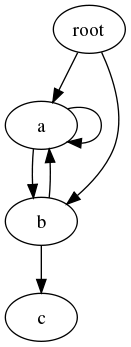

| Purpose: | Python object serialization |
|---|---|
| Python Version: | pickle at least 1.4, cPickle 1.5 |
The pickle module implements an algorithm for turning an arbitrary Python object into a series of bytes. This process is also called serializing” the object. The byte stream representing the object can then be transmitted or stored, and later reconstructed to create a new object with the same characteristics.
The cPickle module implements the same algorithm, in C instead of Python. It is many times faster than the Python implementation, but does not allow the user to subclass from Pickle. If subclassing is not important for your use, you probably want to use cPickle.
Warning
The documentation for pickle makes clear that it offers no security guarantees. Be careful if you use pickle for inter-process communication or data storage. Do not trust data you cannot verify as secure.
It is common to first try to import cPickle, giving an alias of “pickle”. If that import fails for any reason, you can then fall back on the native Python implementation in the pickle module. This gives you the faster implementation, if it is available, and the portable implementation otherwise.
try:
import cPickle as pickle
except:
import pickle
This first example encodes a data structure as a string, then prints the string to the console. It uses a data structure made up of entirely native types. Instances of any class can be pickled, as will be illustrated in a later example. Use pickle.dumps() to create a string representation of the value of the object.
try:
import cPickle as pickle
except:
import pickle
import pprint
data = [ { 'a':'A', 'b':2, 'c':3.0 } ]
print 'DATA:',
pprint.pprint(data)
data_string = pickle.dumps(data)
print 'PICKLE:', data_string
By default, the pickle will contain only ASCII characters. A more efficient binary format is also available, but all of the examples here use the ASCII output because it is easier to understand in print.
$ python pickle_string.py
DATA:[{'a': 'A', 'b': 2, 'c': 3.0}]
PICKLE: (lp1
(dp2
S'a'
S'A'
sS'c'
F3
sS'b'
I2
sa.
Once the data is serialized, you can write it to a file, socket, pipe, etc. Then later you can read the file and unpickle the data to construct a new object with the same values.
try:
import cPickle as pickle
except:
import pickle
import pprint
data1 = [ { 'a':'A', 'b':2, 'c':3.0 } ]
print 'BEFORE:',
pprint.pprint(data1)
data1_string = pickle.dumps(data1)
data2 = pickle.loads(data1_string)
print 'AFTER:',
pprint.pprint(data2)
print 'SAME?:', (data1 is data2)
print 'EQUAL?:', (data1 == data2)
As you see, the newly constructed object is the equal to but not the same object as the original. No surprise there.
$ python pickle_unpickle.py
BEFORE:[{'a': 'A', 'b': 2, 'c': 3.0}]
AFTER:[{'a': 'A', 'b': 2, 'c': 3.0}]
SAME?: False
EQUAL?: True
In addition to dumps() and loads(), pickle provides a couple of convenience functions for working with file-like streams. It is possible to write multiple objects to a stream, and then read them from the stream without knowing in advance how many objects are written or how big they are.
try:
import cPickle as pickle
except:
import pickle
import pprint
from StringIO import StringIO
class SimpleObject(object):
def __init__(self, name):
self.name = name
l = list(name)
l.reverse()
self.name_backwards = ''.join(l)
return
data = []
data.append(SimpleObject('pickle'))
data.append(SimpleObject('cPickle'))
data.append(SimpleObject('last'))
# Simulate a file with StringIO
out_s = StringIO()
# Write to the stream
for o in data:
print 'WRITING: %s (%s)' % (o.name, o.name_backwards)
pickle.dump(o, out_s)
out_s.flush()
# Set up a read-able stream
in_s = StringIO(out_s.getvalue())
# Read the data
while True:
try:
o = pickle.load(in_s)
except EOFError:
break
else:
print 'READ: %s (%s)' % (o.name, o.name_backwards)
The example simulates streams using StringIO buffers, so we have to play a little trickery to establish the readable stream. A simple database format could use pickles to store objects, too, though shelve would be easier to work with.
$ python pickle_stream.py
WRITING: pickle (elkcip)
WRITING: cPickle (elkciPc)
WRITING: last (tsal)
READ: pickle (elkcip)
READ: cPickle (elkciPc)
READ: last (tsal)
Besides storing data, pickles are very handy for inter-process communication. For example, using os.fork() and os.pipe(), one can establish worker processes that read job instructions from one pipe and write the results to another pipe. The core code for managing the worker pool and sending jobs in and receiving responses can be reused, since the job and response objects don’t have to be of a particular class. If you are using pipes or sockets, do not forget to flush after dumping each object, to push the data through the connection to the other end. See multiprocessing if you don’t want to write your own worker pool manager.
When working with your own classes, you must ensure that the class being pickled appears in the namespace of the process reading the pickle. Only the data for the instance is pickled, not the class definition. The class name is used to find the constructor to create the new object when unpickling. Take this example, which writes instances of a class to a file:
try:
import cPickle as pickle
except:
import pickle
import sys
class SimpleObject(object):
def __init__(self, name):
self.name = name
l = list(name)
l.reverse()
self.name_backwards = ''.join(l)
return
if __name__ == '__main__':
data = []
data.append(SimpleObject('pickle'))
data.append(SimpleObject('cPickle'))
data.append(SimpleObject('last'))
try:
filename = sys.argv[1]
except IndexError:
raise RuntimeError('Please specify a filename as an argument to %s' % sys.argv[0])
out_s = open(filename, 'wb')
try:
# Write to the stream
for o in data:
print 'WRITING: %s (%s)' % (o.name, o.name_backwards)
pickle.dump(o, out_s)
finally:
out_s.close()
When run, the script creates a file based on the name given as argument on the command line:
$ python pickle_dump_to_file_1.py test.dat
WRITING: pickle (elkcip)
WRITING: cPickle (elkciPc)
WRITING: last (tsal)
A simplistic attempt to load the resulting pickled objects fails:
try:
import cPickle as pickle
except:
import pickle
import pprint
from StringIO import StringIO
import sys
try:
filename = sys.argv[1]
except IndexError:
raise RuntimeError('Please specify a filename as an argument to %s' % sys.argv[0])
in_s = open(filename, 'rb')
try:
# Read the data
while True:
try:
o = pickle.load(in_s)
except EOFError:
break
else:
print 'READ: %s (%s)' % (o.name, o.name_backwards)
finally:
in_s.close()
This version fails because there is no SimpleObject class available:
$ python pickle_load_from_file_1.py test.dat
Traceback (most recent call last):
File "pickle_load_from_file_1.py", line 52, in <module>
o = pickle.load(in_s)
AttributeError: 'module' object has no attribute 'SimpleObject'
The corrected version, which imports SimpleObject from the original script, succeeds.
Add:
from pickle_dump_to_file_1 import SimpleObject
to the end of the import list, then re-run the script:
$ python pickle_load_from_file_2.py test.dat
READ: pickle (elkcip)
READ: cPickle (elkciPc)
READ: last (tsal)
There are some special considerations when pickling data types with values that cannot be pickled (sockets, file handles, database connections, etc.). Classes that use values which cannot be pickled can define __getstate__() and __setstate__() to return a subset of the state of the instance to be pickled. New-style classes can also define __getnewargs__(), which should return arguments to be passed to the class memory allocator (C.__new__()). Use of these features is covered in more detail in the standard library documentation.
The pickle protocol automatically handles circular references between objects, so you don’t need to do anything special with complex data structures. Consider the digraph:

Even though the graph includes several cycles, the correct structure can be pickled and then reloaded.
import pickle
class Node(object):
"""A simple digraph where each node knows about the other nodes
it leads to.
"""
def __init__(self, name):
self.name = name
self.connections = []
return
def add_edge(self, node):
"Create an edge between this node and the other."
self.connections.append(node)
return
def __iter__(self):
return iter(self.connections)
def preorder_traversal(root, seen=None, parent=None):
"""Generator function to yield the edges via a preorder traversal."""
if seen is None:
seen = set()
yield (parent, root)
if root in seen:
return
seen.add(root)
for node in root:
for (parent, subnode) in preorder_traversal(node, seen, root):
yield (parent, subnode)
return
def show_edges(root):
"Print all of the edges in the graph."
for parent, child in preorder_traversal(root):
if not parent:
continue
print '%5s -> %2s (%s)' % (parent.name, child.name, id(child))
# Set up the nodes.
root = Node('root')
a = Node('a')
b = Node('b')
c = Node('c')
# Add edges between them.
root.add_edge(a)
root.add_edge(b)
a.add_edge(b)
b.add_edge(a)
b.add_edge(c)
a.add_edge(a)
print 'ORIGINAL GRAPH:'
show_edges(root)
# Pickle and unpickle the graph to create
# a new set of nodes.
dumped = pickle.dumps(root)
reloaded = pickle.loads(dumped)
print
print 'RELOADED GRAPH:'
show_edges(reloaded)
The reloaded nodes are not the same object, but the relationship between the nodes is maintained and only one copy of the object with multiple reference is reloaded. Both of these statements can be verified by examining the id() values for the nodes before and after being passed through pickle.
$ python pickle_cycle.py
ORIGINAL GRAPH:
root -> a (4299677584)
a -> b (4299677648)
b -> a (4299677584)
b -> c (4299718736)
a -> a (4299677584)
root -> b (4299677648)
RELOADED GRAPH:
root -> a (4299718864)
a -> b (4299718928)
b -> a (4299718864)
b -> c (4299718992)
a -> a (4299718864)
root -> b (4299718928)
See also